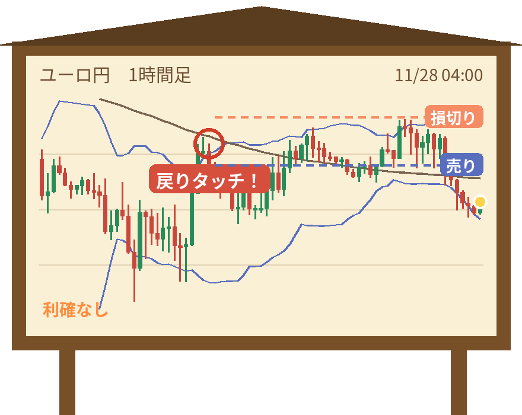

【カピ蔵】ユーロ円 売り → 週末決済 +2,140円（2026/11/26）

「朝風呂、気持ちいい…」
カピ蔵（担当：押し目B（下限・0.8ATR））が、11月26日 06時ごろにユーロ円を売り。結果は週末決済・+2,140円（1万通貨の目安）でした。
今回のトレード
| 通貨 | ユーロ円 |
|---|---|
| 方向 | 売り |
| エントリー | 11/26 06:00 174.711円 |
| 最初の損切り | 174.996円 |
| 利確 | なし（追いかけ） |
| 決済 | 11/28 05:00ごろ 174.493円（週末決済） |
| 保有時間 | 約47時間 |
| 成績 | +0.75R（リスク1回分を1とした成績） |
| 損益の目安 | +2,140円（1万通貨） |
なぜ入った？ 戦法「ゆったり押し目」
ウキ丸と同じ押し目のルールで、損切りを少し遠め（ATRの0.8倍）に置きます。そのぶん、のんびり待てます。
今回のチャートでは「戻りタッチ！」のサインが出ています（下の図の丸印）。

結果
週末はポジションを持ち越さないルールなので、土曜の朝に決済しました。
「いいお湯だった〜」
「また明日、お湯で会おうね」
「また明日、お湯で会おうね」